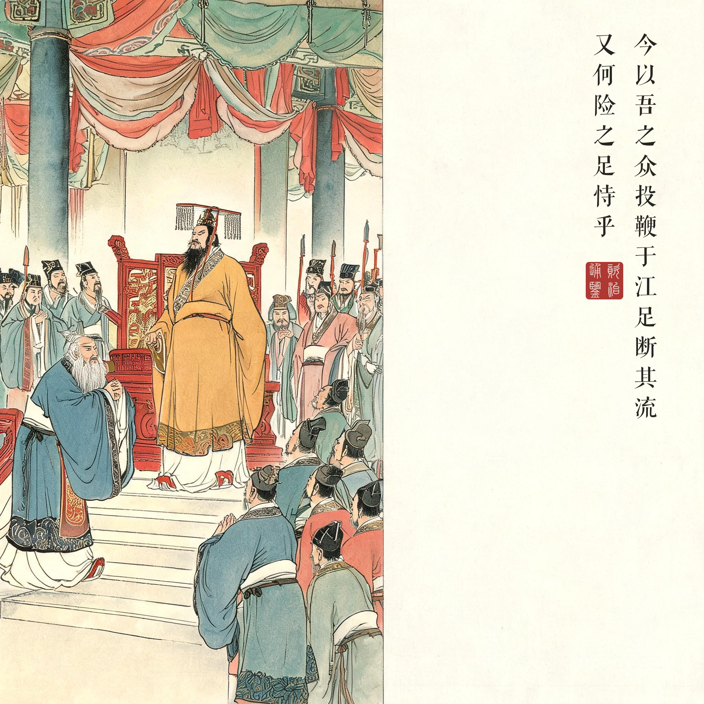
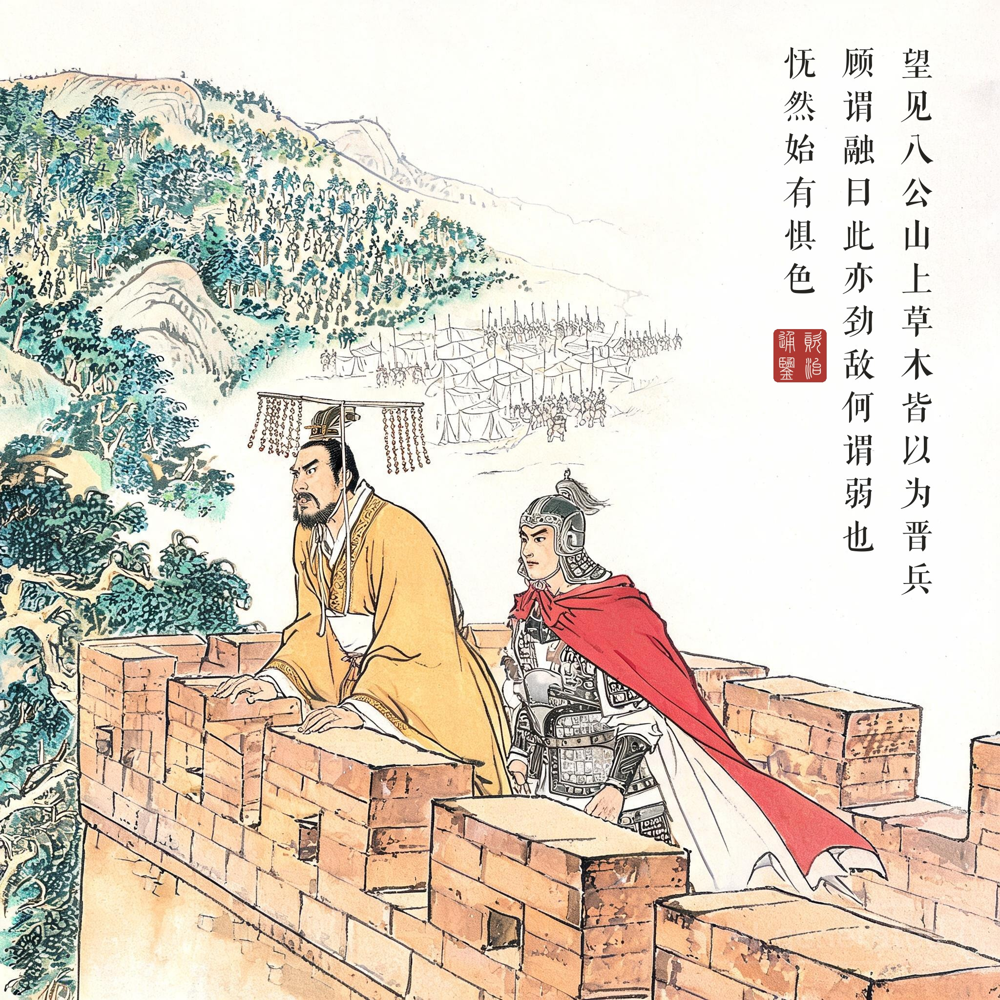
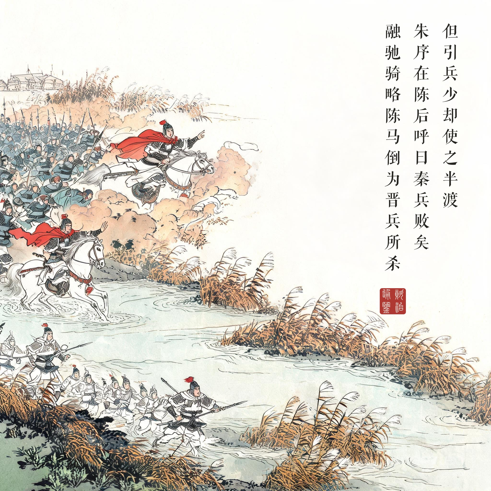
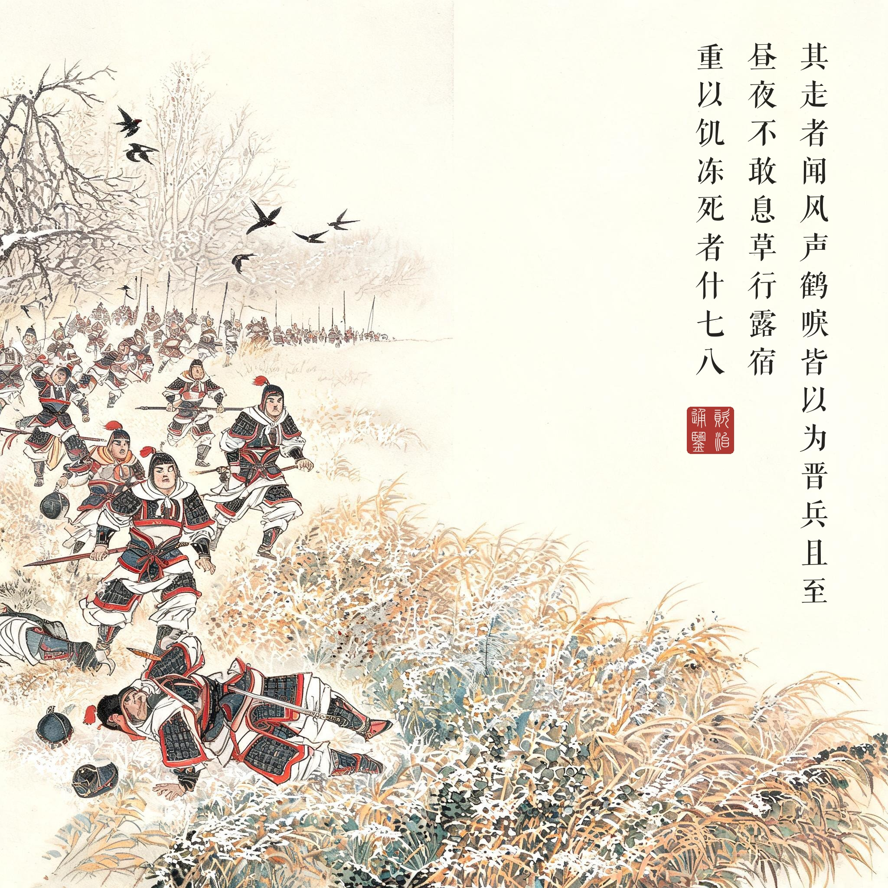
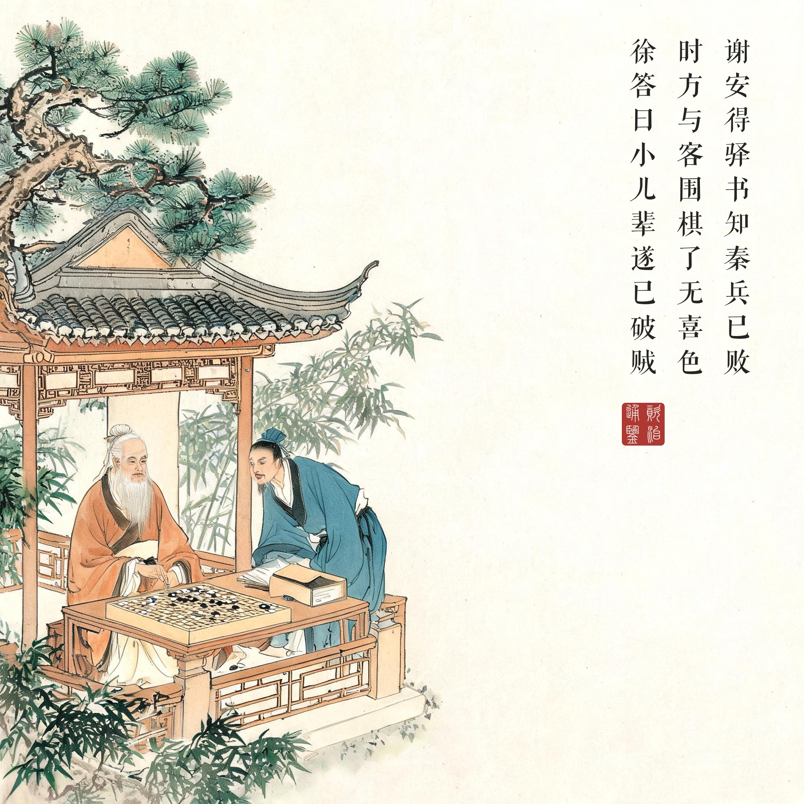

《资治通鉴 · 卷第一百五 · 晋纪二十七》烈宗孝武皇帝上之中太元八年（公元 383 年）
（据 daizhigev20《资治通鉴》底本节录。底本作"肥水"，即后世通行之"淝水"）
秦王坚入太极殿，议曰："自吾承业，垂三十载，四方略定，唯东南一隅，未沾王化。今略计吾士卒，可得九十七万，吾欲自将以讨之，何如？"……太子左卫率石越曰："今岁镇守斗，福德在吴。伐之，必有天殃。且彼据长江之险……殆未可伐也！"坚曰："昔武王伐纣，逆岁违卜……今以吾之众，投鞭于江，足断其流，又何险之足恃乎！"
秦王坚与阳平公融登寿阳城望之。见晋兵部阵严整，又望见八公山上草木，皆以为晋兵，顾谓融曰："此亦劲敌，何谓弱也！"怃然始有惧色。
秦兵逼肥水而陈，晋兵不得渡。谢玄遣使谓阳平公融曰："君悬军深入，而置陈逼水，此乃持久之计，非欲速战者也。若移陈小却，使晋兵得渡，以决胜负，不亦善乎！"秦诸将皆曰："我众彼寡，不如遏之，使不得上，可以万全。"坚曰："但引兵少却，使之半渡，我以铁骑蹙而杀之，蔑不胜矣！"融亦以为然，遂麾兵使却。秦兵遂退，不可复止……融驰骑略陈，欲以帅退者，马倒，为晋兵所杀，秦兵遂溃……初，秦兵小却，硃序在陈后呼曰："秦兵败矣！"众遂大奔。
秦兵大败，自相蹈藉而死者，蔽野塞川。其走者闻风声鹤唳，皆以为晋兵且至，昼夜不敢息，草行露宿，重以饥冻，死者什七、八。
谢安得驿书，知秦兵已败，时方与客围棋，摄书置床上，了无喜色，围棋如故。客问之，徐答曰："小儿辈遂已破贼。"既罢，还内，不觉屐齿之折。
苻坚登太极殿议事："自我继承大业近三十年，四方大体平定，只有东南一角还没归化。粗算我的士卒，可得九十七万，我要御驾亲征，如何？"……石越劝阻："今年星象福德在吴，伐之不祥；而且他们据长江之险，恐怕不可伐！"苻坚说："从前武王伐纣，也是逆着岁星、违了占卜。如今以我的部众，把马鞭投进长江就足以截断水流，他们还有什么险可倚仗！"
苻坚与阳平公苻融登上寿阳城眺望。只见晋兵阵营严整，又望见八公山上的草木，都以为是晋兵，回头对苻融说："这也是劲敌，谁说他们弱！"怅然生出惧色。
秦军逼近肥水列阵，晋军无法渡河。谢玄派使者对苻融说："你们孤军深入，临水列阵，这是打持久战的安排，不像要速战。不如把阵稍往后移，让晋军渡河，一决胜负，不好吗！"秦军诸将都说："我们人多他们人少，不如拦在河边不让他们上来，才是万全。"苻坚说："只管稍稍退兵，等他们渡到一半，以铁骑冲杀，没有不胜的！"苻融也同意，便挥军后撤。秦军一退，再止不住……苻融纵马掠阵想压住退兵，马倒在地，被晋兵所杀，秦军于是全线崩溃……原来秦军刚一后移时，朱序就在阵后大喊："秦兵败了！"全军顿时大溃。
秦军大败，自相践踏而死的，尸体蔽野塞川。逃跑的人听见风声鹤唳，都以为是晋兵追到，昼夜不敢停，在草野赶路、露天歇宿，加上饥寒，死掉十之七八。
谢安收到驿书，知道秦兵已败，当时正与客人下围棋，把信顺手放在床上，脸上没有一点喜色，继续下棋。客人问战况，他慢慢答道："小孩子们已经把贼破了。"棋局结束回到内室，过门槛时，木屐的齿被门槛磕折了都没有察觉。
一场败给了自己的会战。淝水的胜负手不是晋军的八万北府兵，而是秦军自己那"少却"的一步：苻坚的算盘是"半渡而击"的兵法常识，可他忘了一支九十七万人拼凑的大军，最大的敌人是秩序本身——前锋一退，后军不知情；朱序一声"秦兵败矣"，谣言比军令跑得快；朱序本是晋降将，劝降使者的身份让他站在阵后，这一个字的"朱"字，抵得上八万精兵。风声鹤唳、草木皆兵、投鞭断流——一战为汉语贡献了四个成语，其中三个是战败方贡献的。
两副面孔的"雄主"。第一幕朝堂上的苻坚"投鞭断流"，第二幕城头上的苻坚"怃然始有惧色"——中间只隔了一场洛涧小败和一眼晋军的阵营。司马光写骄兵之败，不靠议论，只靠这两副面孔的对照。而讽刺的注脚是苻坚帐下那位清醒的反对者：战前泣谏的苻融战死阵中，留下"天道不顺、晋国无衅、数战兵疲"三难预言——字字应验。
围棋与屐齿。东晋一端，谢安是全回的压舱石。捷报到时下棋，"小儿辈遂已破贼"，是名相的定力；回内室屐齿磕折而不觉，是人的真性情。谢安围棋赌墅、小儿辈破贼，从此成为中国士大夫"雅量"叙事的原型。八公山的草木与建康的棋枰，一恐一静，恰是这场战争的两极。